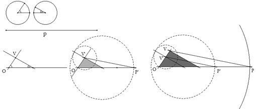
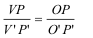

Para el aula Problema 324 Ejercicios31. Construir un triángulo conociendo el perímetro y dos ángulos.
Severi, F. (1952) : Elementos de geometría I, con 220 figuras, traducción de la segunda edición italiana por el profesor T. Martín Escobar, de la Escuela Industrial de Gijón. Tercera reimpresión. Editorial Labor, Barcelona. Talleres Gráficos Ibero-Americanos S.A. Reproducción offset.(pág 201) Solución de José María Pedret, Ingeniero Naval. Esplugues de Llobregat (Barcelona). (27 de julio de 2006) |
|
SOLUCIÓN |
|
Dados dos ángulos de un triángulo, esta queda definido salvo una homotecia (o semejanza) que nos lo transforme en otro triángulo homotético (o semejante) con el perímetro requerido. Dados los dos ángulos y el perímetro p (ver figura)
 por un punto cualquiera O trazamos una recta horizontal. Con vértice O trazamos el primer ángulo y sobre otro punto cualquiera de la recta horizontal trazamos el segundo ángulo. Obtenemos un triángulo homotético (semejante) al buscado cuyo tercer vértice es V'. Desarrollamos el triángulo, a partir de O, sobre la recta horizontal y obtenemos OP'.

Por ello si trazamos por P una paralela a V'P' obtenemos V en su intersección con OV'. Obtenido este vértice una paralela por V al segundo lado del triángulo inicial nos determina el triángulo buscado.
|